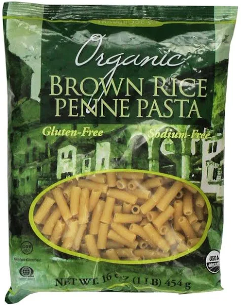

Vegan and Gluten Free Substitutes
If you want to make these dishes vegan or gluten free, here are some recommended substitutes.
Garlic Bread Substitutes
If you’re gluten free, you can use any gluten free bread or baguette of your choice.The butter can be replaced with olive oil or your favorite vegan butter.

Baked Ziti Substitutes
Substitute the ziti noodles with brown rice penne pasta. I would not recommend using chickpea or red lentil noodles because they make the ziti taste gritty and earthy. You can replace the cheese with your favorite brand of vegan mozzarella, ricotta, and parmesan.
